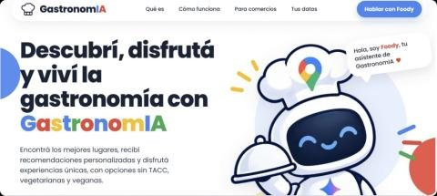

Pieza 1 · Gacetilla para portales de tecnología y gastronomía
Gacetilla de prensa
Tecnología · Gastronomía · Buenos Aires, 16 de noviembre de 2026
GastronomIA presenta a Foody, un asistente de inteligencia artificial para decidir dónde comer
Se presentará el 26 de noviembre en un evento con demostraciones en vivo, degustaciones y preguntas para periodistas y creadores.

Dirigida a: IT Sitio e Info Gastronómica (Argentina); TechCrunch y Time Out (internacional)